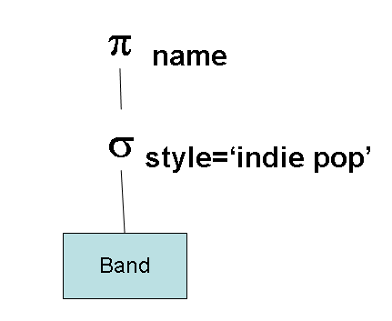
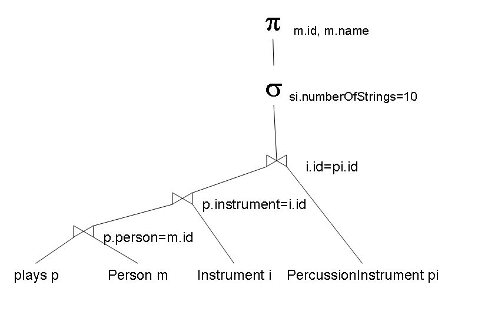
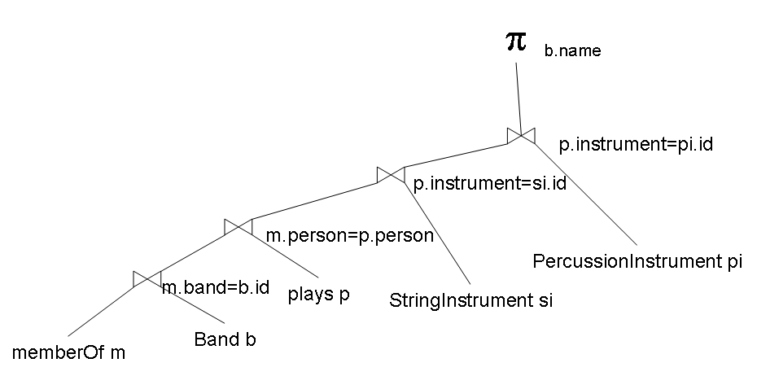

This is a solution to a sample exercise.
select b.name from Band b where b.style = 'indie pop';
select m.id, m.name from Person m, plays p, Instrument i, StringInstrument si where p.person = m.id and p.instrument = i.id and i.id = si.id and si.numberOfStrings = 10;
select b.name from Band b, plays p, StringInstrument si, PercussionInstrument pi, memberOf m where b.id = m.band and p.person = m.person and p.instrument = si.id and p.instrument = pi.id
© 2011 Ken Baclawski. All rights reserved. Redistribution and use in source and binary forms, with or without modification, are permitted provided that redistributions and uses retain this copyright notice.